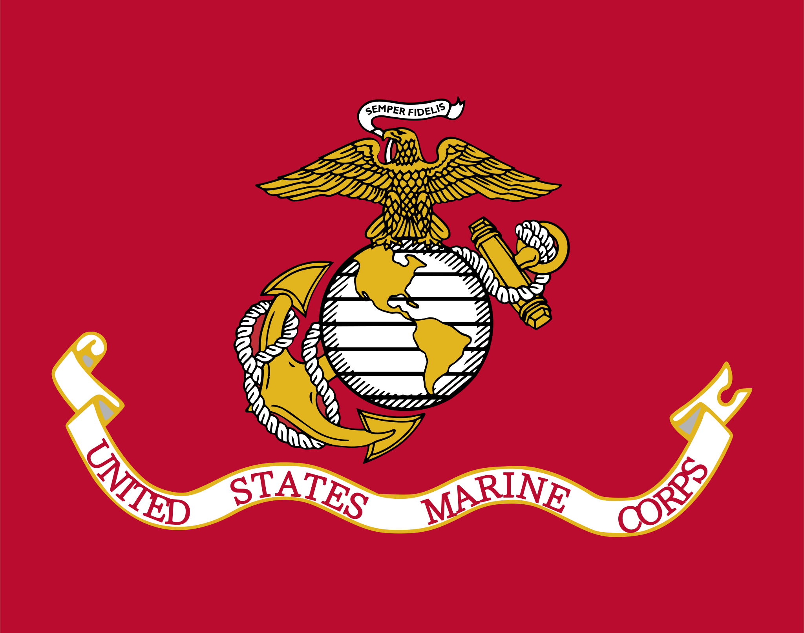

The United States Marine Corps
The United States Marine Corps (USMC) is a branch of the United States Armed Forces responsible for providing power projection from the sea, using the mobility of the U.S. Navy to deliver combined-arms task forces rapidly. The Marine Corps is one of the eight uniformed services of the United States and is a component of the Department of the Navy. The Marine Corps is known for its rigorous training and high standards, making it one of the most elite fighting forces in the world.
Revolutionary War (1775-1783)
In 1776, the Continental Marines, formed in 1775, saw their first major action, a raid on the British-held island of Nassau in the Bahamas, and later participated in the Battles of Trenton and Princeton, demonstrating their amphibious and land combat capabilities during the American Revolutionary War.
Barbary War (1801-1815)
The Marine Corps' early history is intertwined with its role in combating Barbary pirates in the early 1800s, particularly during the First Barbary War (1801-1805) and the Second Barbary War (1815-1816), where Marines played a crucial role in naval and land operations against the Barbary States.
World War I (1914-1918)
The United States Marine Corps played a significant role in World War I, particularly during the Battle of Belleau Wood, where they earned a reputation for their bravery and tenacity. The Marines fought alongside the French Army and were instrumental in securing victory in several key battles. Their performance in WWI solidified the Marine Corps' status as an elite fighting force.
World War II (1939-1945)
During World War II, the Marine Corps was involved in several major campaigns in the Pacific Theater, including the Battle of Iwo Jima and the Battle of Okinawa. The Marines' amphibious assault tactics and ability to adapt to challenging environments were crucial to their success. The Marine Corps also established the first-ever special operations unit, the Marine Raiders, which conducted guerrilla warfare and reconnaissance missions.
Korea War (1950-1953)
The Marine Corps played a vital role in the Korean War, particularly during the Inchon Landing and the Battle of Chosin Reservoir. The Marines' ability to conduct amphibious assaults and operate in harsh conditions was instrumental in their success during the conflict. The Marine Corps also established the first-ever helicopter-borne assault, which revolutionized modern warfare.
Vietnam War (1955-1975)
The Marine Corps was heavily involved in the Vietnam War, conducting numerous operations and engagements throughout the conflict. The Marines' ability to adapt to guerrilla warfare and their commitment to winning the hearts and minds of the Vietnamese people were crucial to their success. The Marine Corps also established the first-ever combined arms task force, which integrated air, ground, and naval forces for maximum effectiveness.
Beirut Marine Corps Barracks Bombing (October 23, 1983)
On October 23, 1983, a terrorist bombing in Beirut, Lebanon, killed 241 U.S. military personnel, including 220 Marines.
Operation Desert Shield and Desert Storm (1990 - 1991)
The Marine Corps played a significant role in Operation Desert Shield and Desert Storm, conducting amphibious assaults and ground operations to liberate Kuwait from Iraqi occupation. The Marines' ability to operate in a joint environment with other branches of the military was crucial to their success. The Marine Corps also established the first-ever Marine Expeditionary Force, which provided a rapid response capability for future conflicts.
Operation Enduring Freedom (2001-2014)
Following the September 11th attacks, the Marine Corps played a significant role in Operation Enduring Freedom, deploying units to Afghanistan, participating in operations like Task Force 58, and contributing to the broader efforts against al-Qaeda and the Taliban.
Operation Iraqi Freedom (2003-2011)
During Operation Iraqi Freedom, the Marine Corps played a key role, including leading the initial invasion with the I Marine Expeditionary Force (I MEF), engaging in fierce combat, and later taking on responsibility for the Al Anbar Province.